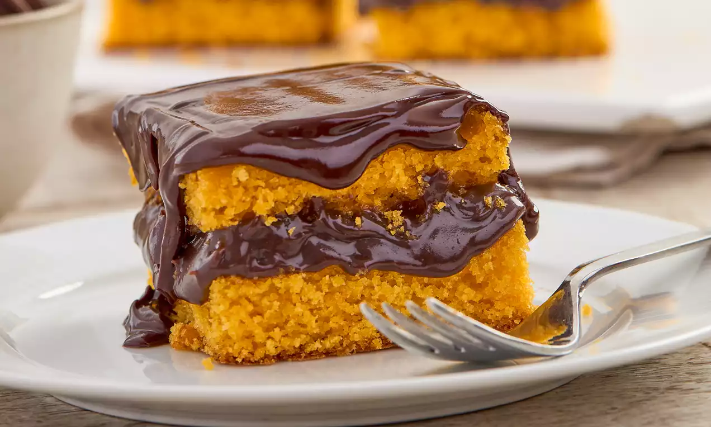

Receita bolo de cenoura
| dificuldade |
porções |
tempo |
| medio
| 10 pedaços
| 40 min
|

Ingredientes:
Ovos: unidades inteiras
Farinha de Trigo 2 xícaras
Açúcar: xícara
Leite Integral:/2 xícara
Morangos: caixa de morangos frescos (lavados e picados)
Leite Condensado: lata (para a cobertura)
Fermento em Pó: colher de sopa
Modo de Preparo:
Preaqueça o forno a 180 °C. Unte e enfarinhe uma fôrma.
Bata os líquidos: Cenouras, ovos e óleo no liquidificador por 2 min. Adicione o açúcar e misture.
Misture os secos: Em uma tigela, junte a farinha, o sal e o fermento.
Junte tudo: Despeje o líquido na tigela dos secos e mexa delicadamente até ficar homogêneo.
Asse: Leve ao forno por cerca de 45 minutos (faça o teste do palito).
Prepare a cobertura: Misture os ingredientes em uma panela e ferva até engrossar levemente.
Finalize: Desenforme o bolo e cubra com a calda ainda quente.
Obrigado pela Visita